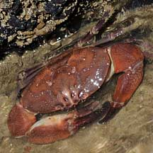
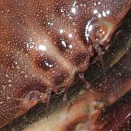

|
|
| crabs text index | photo index |
| Phylum Arthropoda > Subphylum Crustacea > Class Malacostraca > Order Decapoda > Brachyurans > Family Menippidae |
| Maroon
stone crab Menippe rumphii Family Menippidae updated Dec 2016 Where seen? This sturdy crab is seen in rocky and rubbly areas on our Northern shores. Elsewhere, it is found in sandy-muddy areas usually under rocks. Features: Body width to about 9cm. Large oval body, edge smooth with four blunt points or 'teeth'. Between the eyes are four tiny bumps arranged in a square. Reddish to pinkish brown and maroon in adults; young crabs maroon to reddish brown, with longitudinal white stripes. Large pincers smooth (no pimples) with black tips. One pincer slightly larger with a large molar-like tooth at the base of the finger. Walking legs not very hairy. Its eyes are all red without any green, unlike the very similar looking Stone crab (Myomenippe hardwickii). Sometimes mistaken for the Stone crab (Myomenippe hardwickii) and Red egg crab (Atergatis integerrimus). Here's more on how to tell apart big crabs with big pincers seen on our rocky shores and coral rubble. |
 Changi, Jun 08  All red eyes, no green. |
 Tanah Merah, Jun 12  All red eyes, no green. |
| Maroon stone crabs on Singapore shores |
On wildsingapore
flickr
|
| Other sightings on Singapore shores |
|
Links
|